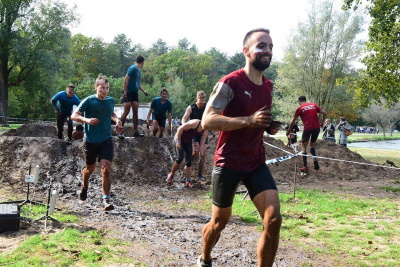

Interests
What I do when I'm not behind a keyboard
Fitness
I joined the gym two years ago and enjoy pushing myself hard to see what I'm capable of. I enjoy tracking everything meticulously and apply progressive overload to get better over time. It's a bit like a video game -- but I'm the main character.
Running
Sunny weather? Ideal for a nice run through country lanes! Usually I do around 5km but occasionally I run 10km or more. I picked up running four years ago, before that I wasn't sporty for way too many years.
Gardening
Watching things grow and evolve over time is one of the things I like about gardening. I'm not really into growing vegetables but I do have a nice collection of small fruit, including blackberries, tayberries, gooseberries, and strawberries.
Baking
I make my own bread.
